Technologies Web – Programmation Web Avancée
Servlets, Cookies, Sessions, JSP, JavaBeans, MVC, Filtres et Listeners
Salma Skhiri
MP2-GL – ISIMM
Année universitaire 2026–2027
Encadrant : Abderrahmen Youssef
Dépôt GitHub : https://github.com/<votre-compte>/TP1-JEE
| Élément | Version / détail |
|---|---|
| Système | Windows 11 Pro (64 bits) |
| JDK | Microsoft Build of OpenJDK 17.0.20.1 (LTS), installé dans C:\Users\MSI\.jdks\ms-17.0.20.1 |
| Serveur | Apache Tomcat 10.1.62 (archive zip Windows x64), extrait dans C:\tomcat\apache-tomcat-10.1.62 |
| API | Jakarta Servlet 6.0 / JSP 3.1 → packages jakarta.servlet.* (et non javax.servlet.*, réservé à Tomcat 9) |
| IDE | IntelliJ IDEA Ultimate 2026.2.2 (plugins Jakarta EE et Tomcat and TomEE intégrés) |
| Outils | Git, navigateur Google Chrome (tests et outils de développement) |
Pourquoi Tomcat 10.1 et le JDK 17 ? Tomcat 10.1 implémente Jakarta EE 10 et demande au minimum Java 11 ; le JDK 17 (LTS) était déjà installé sur ma machine. Le point important est le changement de nom des packages : depuis Jakarta EE 9, javax.servlet est devenu jakarta.servlet. Une servlet compilée avec javax.servlet.http.HttpServlet ne serait tout simplement pas reconnue par Tomcat 10 (erreur ClassNotFoundException / servlet non chargée).
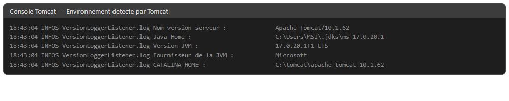
Avant d'utiliser l'IDE, j'ai voulu comprendre ce que fait réellement un déploiement. Toute la chaîne a donc d'abord été réalisée à la main.
apache-tomcat-10.1.62-windows-x64.zip sur le site officiel dlcdn.apache.org et vérification de l'empreinte SHA-512 fournie par Apache (identique).C:\tomcat\apache-tomcat-10.1.62 (= CATALINA_HOME). Dossiers importants : bin (scripts), conf (server.xml, web.xml global), lib (dont servlet-api.jar), webapps (applications déployées), logs, work (JSP compilées).set JAVA_HOME=C:\Users\MSI\.jdks\ms-17.0.20.1 set CATALINA_HOME=C:\tomcat\apache-tomcat-10.1.62 %CATALINA_HOME%\bin\catalina.bat run (catalina.bat stop pour arrêter)
J'utilise catalina.bat run plutôt que startup.bat : le serveur reste dans la console courante et tous les System.out.println des filtres et listeners s'y affichent directement. Le port 8080 était libre (vérifié avec netstat -ano), aucune modification de server.xml n'a été nécessaire.
TP1-JEE/ ├── src/main/java/ │ ├── isep/lab1/bean/Person.java (2.2 JavaBean pour bean.jsp) │ ├── lab/mvc/model/Person.java (3.2 Modèle) │ ├── lab/mvc/controller/Controller.java (3.3 Contrôleur) │ ├── lab/servlets/ FormServlet, ReadCookie, VisitCounter, ShowSession, ListItems, │ │ LoginServlet, Logout, SessionAttributes, AttributeTest, Html, DateUtil │ ├── lab/filters/ LoggingFilter, SecurityFilter │ └── lab/listeners/ ApplicationListener, ActiveSessionListener, RequestListener, │ SessionAttributeListener, ApplicationAttributeListener, │ RequestAttributeListener, SessionUser ├── src/main/webapp/ │ ├── index.html, form.html, form-jsp.html, items.html, login.html │ ├── expression.jsp, scriptlet.jsp, declaration.jsp, bean.jsp, old.jsp, young.jsp │ └── WEB-INF/web.xml ├── build.ps1 (compilation + déploiement manuels) └── pom.xml (import dans IntelliJ / génération d'un WAR)
Une application web Java a toujours la même forme une fois déployée : les ressources publiques (HTML, JSP) à la racine, et un dossier WEB-INF non accessible depuis le navigateur qui contient web.xml, classes/ (le bytecode) et éventuellement lib/ (les jar).
Le script build.ps1 reproduit exactement les étapes manuelles :
# 1. copier src/main/webapp vers build/TP1 et créer build/TP1/WEB-INF/classes # 2. compiler : l'API Servlet est fournie par Tomcat, on la met seulement dans le classpath javac -encoding UTF-8 --release 17 -cp %CATALINA_HOME%\lib\servlet-api.jar -d build\TP1\WEB-INF\classes (tous les .java) # 3. déployer : copier build\TP1 dans %CATALINA_HOME%\webapps\TP1
Tomcat surveille le dossier webapps (autoDeploy="true" dans server.xml) : dès que le dossier TP1 apparaît, l'application est déployée sous le contexte /TP1, d'où l'URL http://localhost:8080/TP1/. Le nom du dossier (ou du fichier .war) donne le context path.
J'ai combiné les deux méthodes de configuration pour les comparer : la plupart des servlets utilisent @WebServlet, mais FormServlet, les deux filtres et RequestListener sont déclarés manuellement dans web.xml. L'attribut metadata-complete="false" indique à Tomcat de lire aussi les annotations.
<servlet>
<servlet-name>FormServlet</servlet-name>
<servlet-class>lab.servlets.FormServlet</servlet-class>
</servlet>
<servlet-mapping>
<servlet-name>FormServlet</servlet-name>
<url-pattern>/FormServlet</url-pattern>
<url-pattern>/Form_Servlet</url-pattern>
</servlet-mapping>
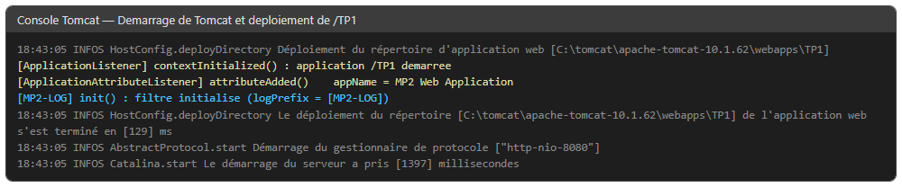
ApplicationListener, ApplicationAttributeListener et l'initialisation de LoggingFilter avec le paramètre logPrefix.Le support de Tomcat fait partie des fonctionnalités Jakarta EE de l'édition Ultimate d'IntelliJ IDEA, que j'utilise. Étapes suivies :
TP1-JEE : IntelliJ détecte le pom.xml et importe le projet Maven (packaging war, dépendances jakarta.servlet-api 6.0.0 et jakarta.servlet.jsp-api 3.1.1 en provided, car fournies par Tomcat à l'exécution).ms-17.C:\tomcat\apache-tomcat-10.1.62 comme Tomcat Home ; IntelliJ reconnaît la version 10.1.62.http://localhost:8080/TP1/, JRE 17, HTTP port 8080) ; onglet Deployment → + Artifact → TP1:war exploded avec le Application context /TP1.Différence observée avec le déploiement manuel : IntelliJ ne copie pas l'application dans webapps. Il démarre Tomcat avec un CATALINA_BASE séparé (dans le dossier système d'IntelliJ) et un fichier de contexte qui pointe vers l'artefact exploded du projet (target/TP1). L'installation de Tomcat reste donc propre.
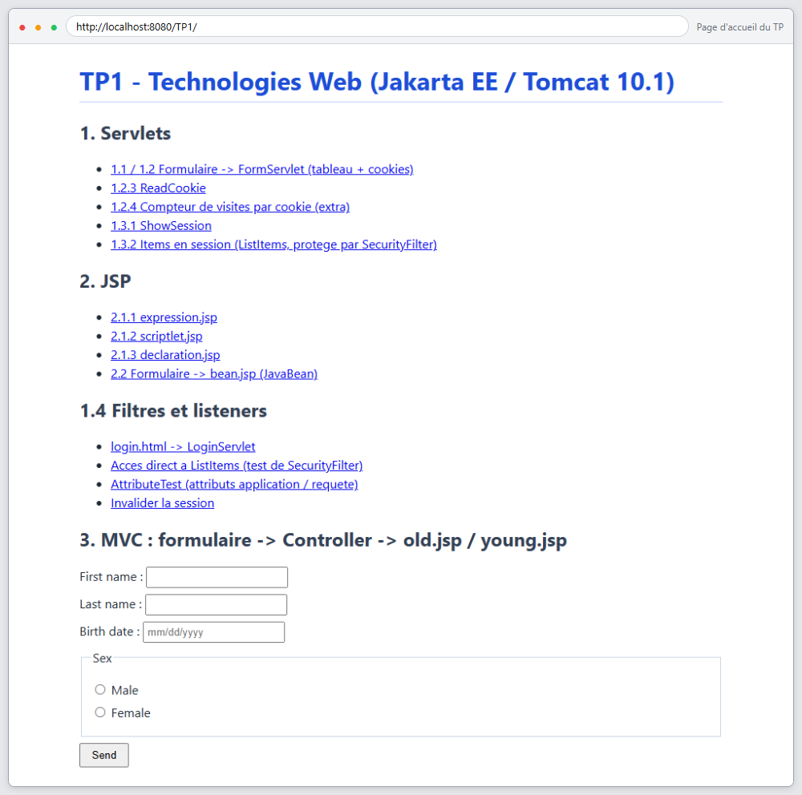
Le formulaire form.html envoie firstName, lastName, birthDay (mm/dd/yyyy) et sex (deux boutons radio) en POST. FormServlet.doPost() lit les paramètres avec request.getParameter() et construit un tableau HTML. J'ai ajouté request.setCharacterEncoding("UTF-8") pour que les caractères accentués soient bien décodés, et un échappement HTML des valeurs (sinon un utilisateur peut injecter du HTML ou du JavaScript dans la page).
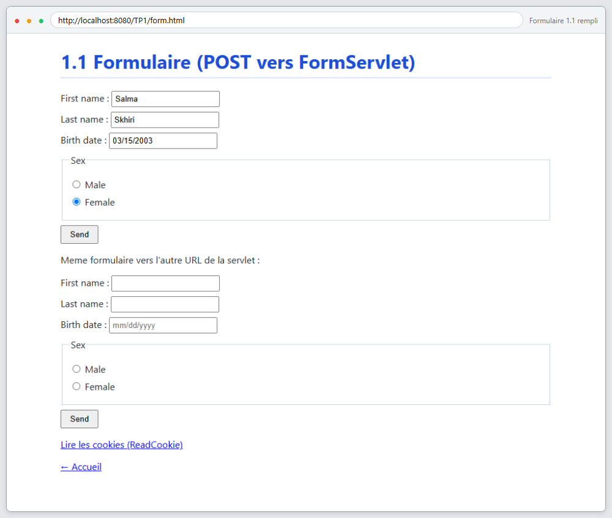
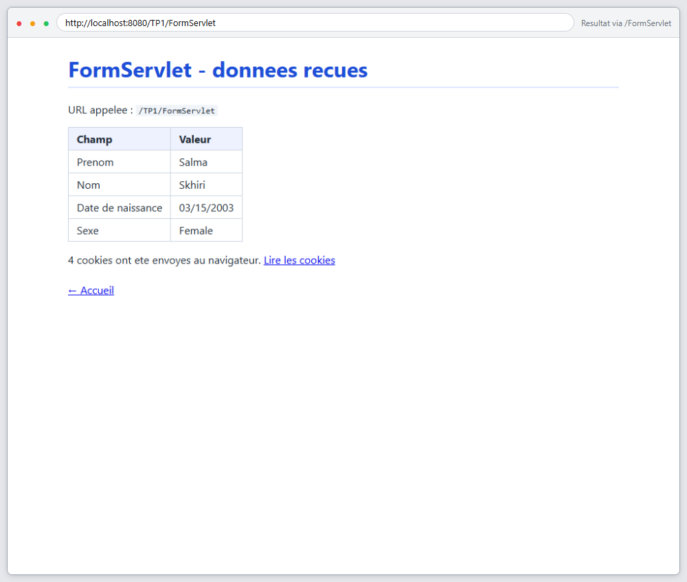
/FormServlet.Deux URL pour la même servlet (1.1.3) : il suffit de mettre deux <url-pattern> dans le même <servlet-mapping> (ou @WebServlet({"/FormServlet","/Form_Servlet"})). Il n'y a qu'une seule instance de la servlet, accessible par deux chemins.
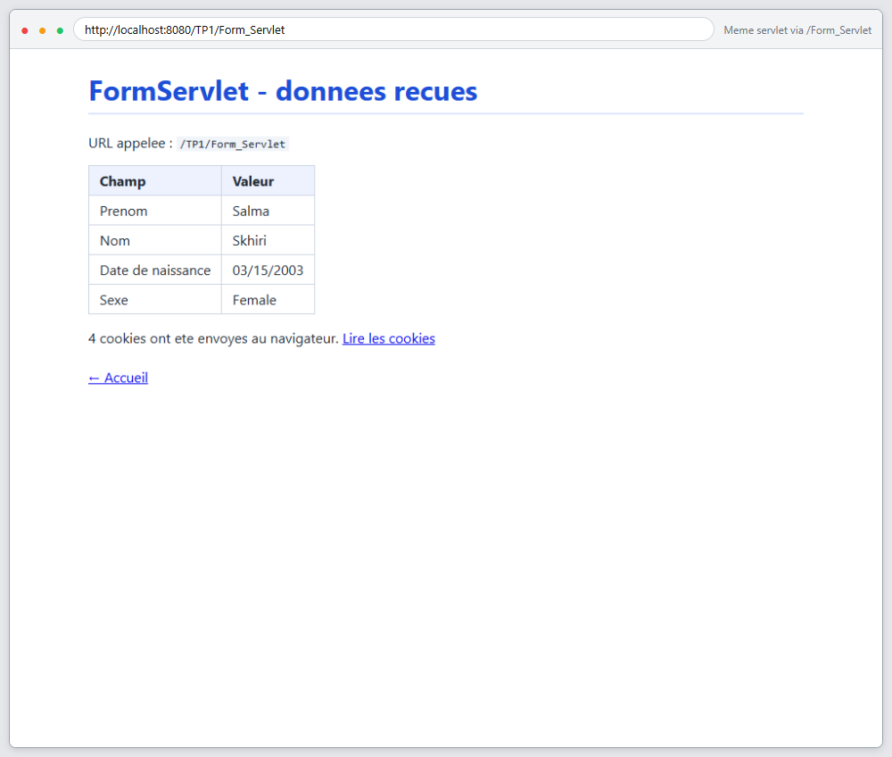
/Form_Servlet.FormServlet crée un cookie par champ avec response.addCookie(). Les cookies sont envoyés dans l'en-tête Set-Cookie de la réponse et renvoyés par le navigateur dans l'en-tête Cookie de chaque requête suivante vers /TP1.
IllegalArgumentException. J'encode donc toutes les valeurs avec URLEncoder.encode() et je les décode dans ReadCookie (c'est pourquoi la date apparaît sous la forme 03%2F15%2F2003 côté navigateur). J'ai aussi fixé setMaxAge(86400) : sans cela le cookie est un « cookie de session » supprimé à la fermeture du navigateur.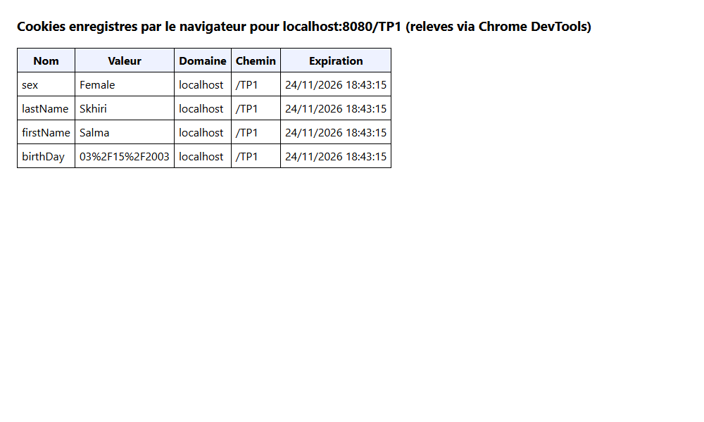
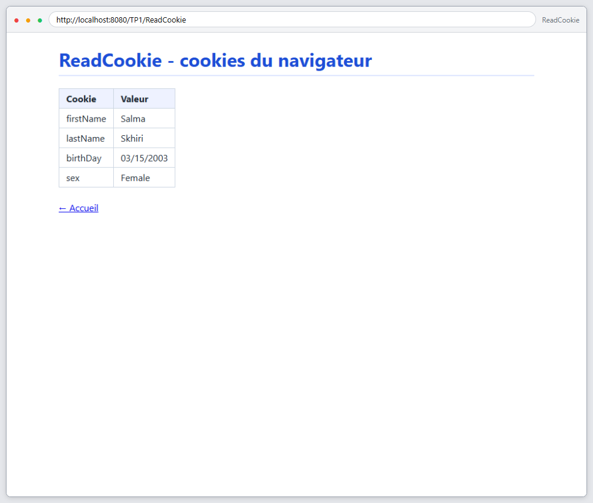
request.getCookies()).ReadCookie est appelée par un simple lien, donc en GET : c'est doGet() qui est implémentée (doPost() lui délègue). Attention, request.getCookies() renvoie null (et non un tableau vide) si le navigateur n'envoie aucun cookie.
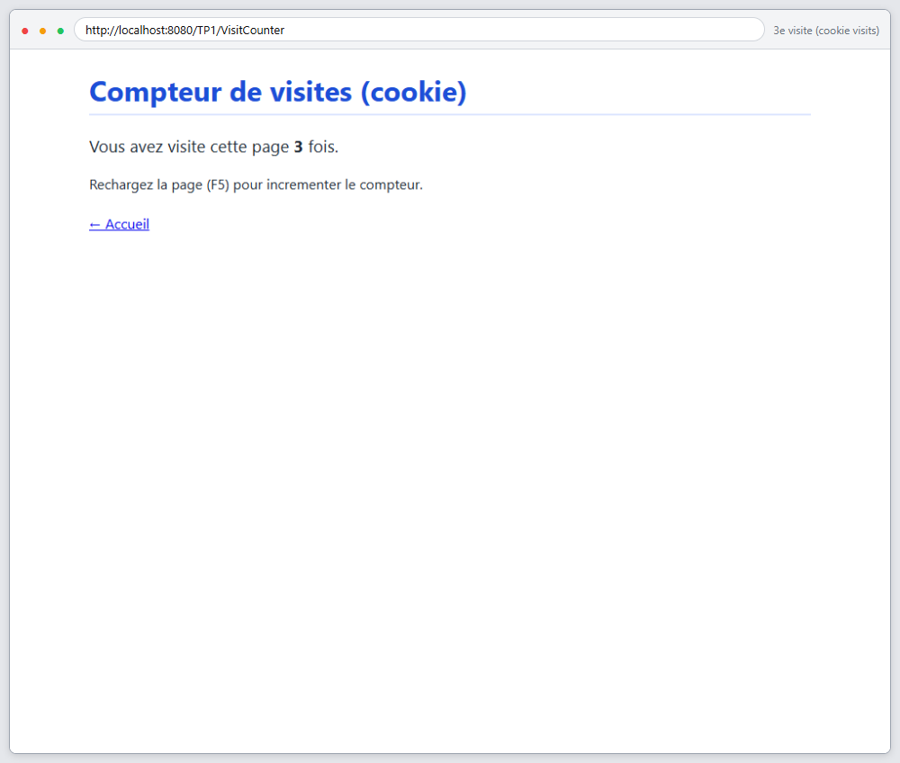
visits (3e visite).request.getSession() crée une session au premier appel ; Tomcat envoie alors un cookie JSESSIONID. Aux requêtes suivantes, le navigateur renvoie ce cookie et Tomcat retrouve la même HttpSession. session.isNew() vaut true tant que le client n'a pas encore renvoyé l'identifiant : c'est ce qui permet d'afficher « Welcome on my site » puis « Welcome back ».
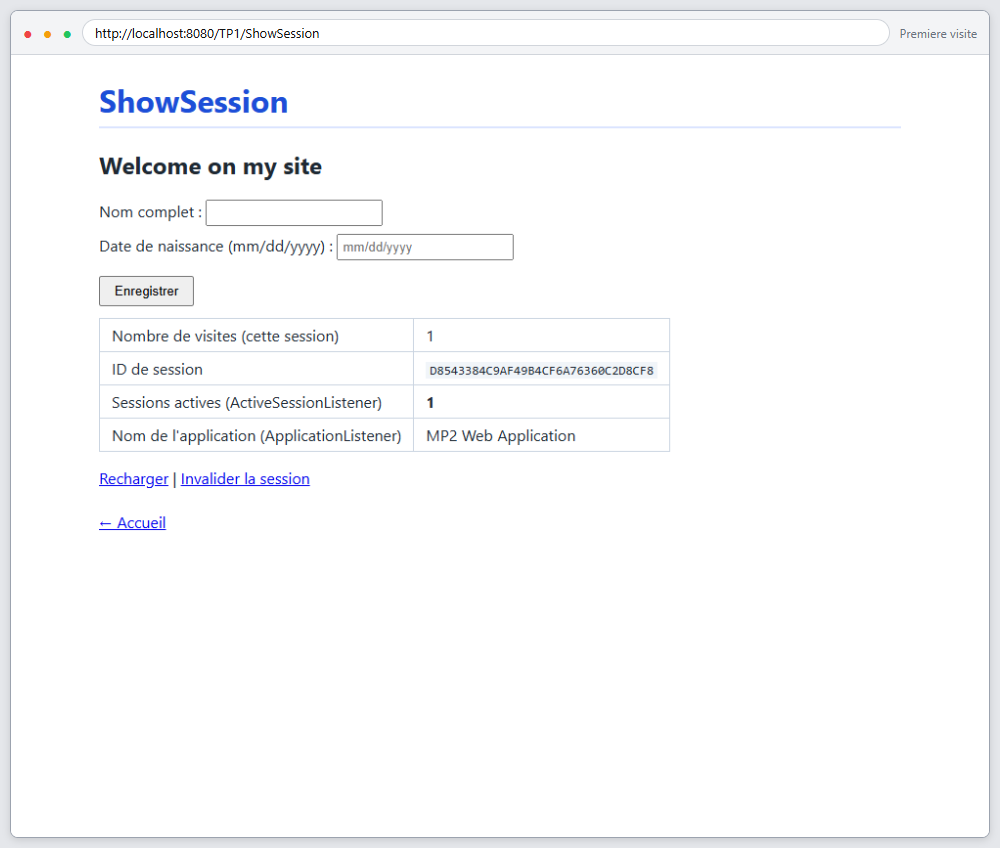
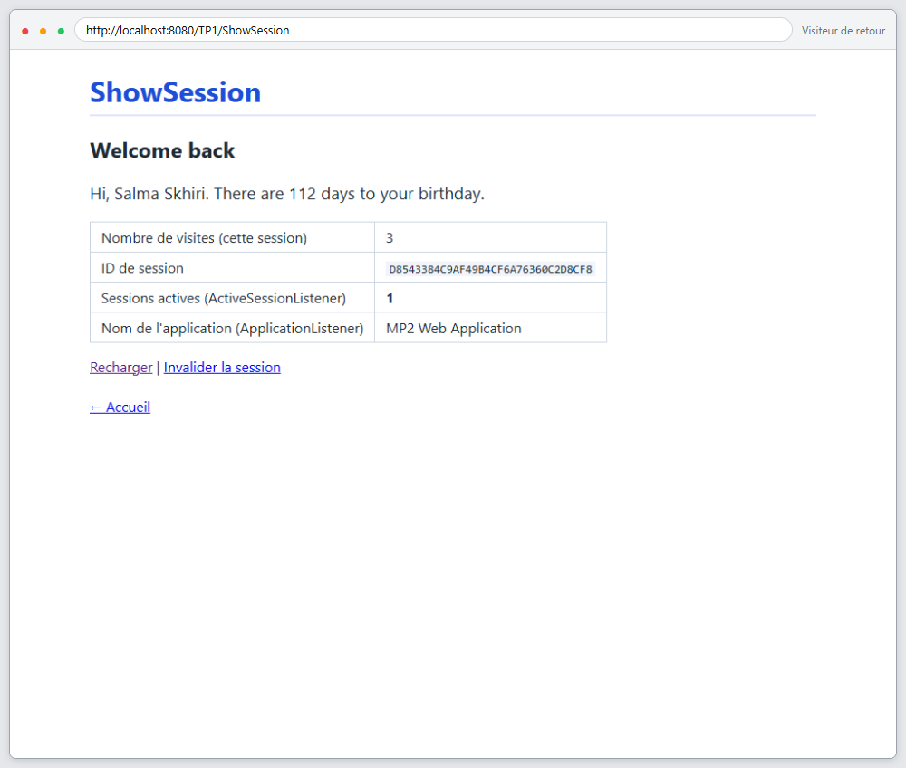
Le calcul utilise java.time.LocalDate : on place la date de naissance dans l'année courante et, si elle est déjà passée, dans l'année suivante, puis ChronoUnit.DAYS.between(). Le cas du 29 février est géré par withYear() (il devient le 28 février les années non bissextiles). Après la soumission du formulaire, la servlet fait une redirection (motif Post/Redirect/Get) pour qu'un F5 ne renvoie pas le formulaire.
ListItems stocke une ArrayList<String> dans la session. Comme l'objet stocké est une référence, il suffit d'appeler items.add() : inutile de refaire setAttribute(). Pour l'extra, je compte les occurrences avec une LinkedHashMap (merge(item, 1, Integer::sum)). L'accès à la liste est synchronisé sur la session, car deux onglets du même navigateur partagent la même session et peuvent envoyer des requêtes en parallèle (chaque requête est traitée par un thread différent).
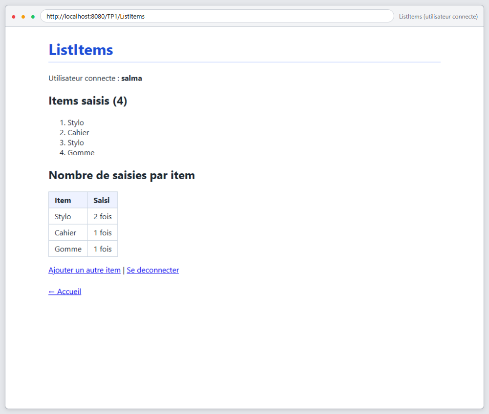
| Élément | Syntaxe | Où le code se retrouve dans la servlet générée |
|---|---|---|
| Expression | <%= ... %> | out.print(...) dans _jspService() |
| Scriptlet | <% ... %> | copié tel quel dans _jspService() (variables locales, exécutées à chaque requête) |
| Déclaration | <%! ... %> | attributs et méthodes de la classe (partagés entre toutes les requêtes) |
En ouvrant work\Catalina\localhost\TP1\org\apache\jsp\declaration_jsp.java, on voit que Tomcat (Jasper) a transformé la JSP en une vraie servlet : numEntries et randomInt() sont des membres de la classe, alors que la boucle for est dans _jspService(). Une déclaration de variable modifiable est donc partagée entre tous les utilisateurs, ce qui n'est pas thread-safe.
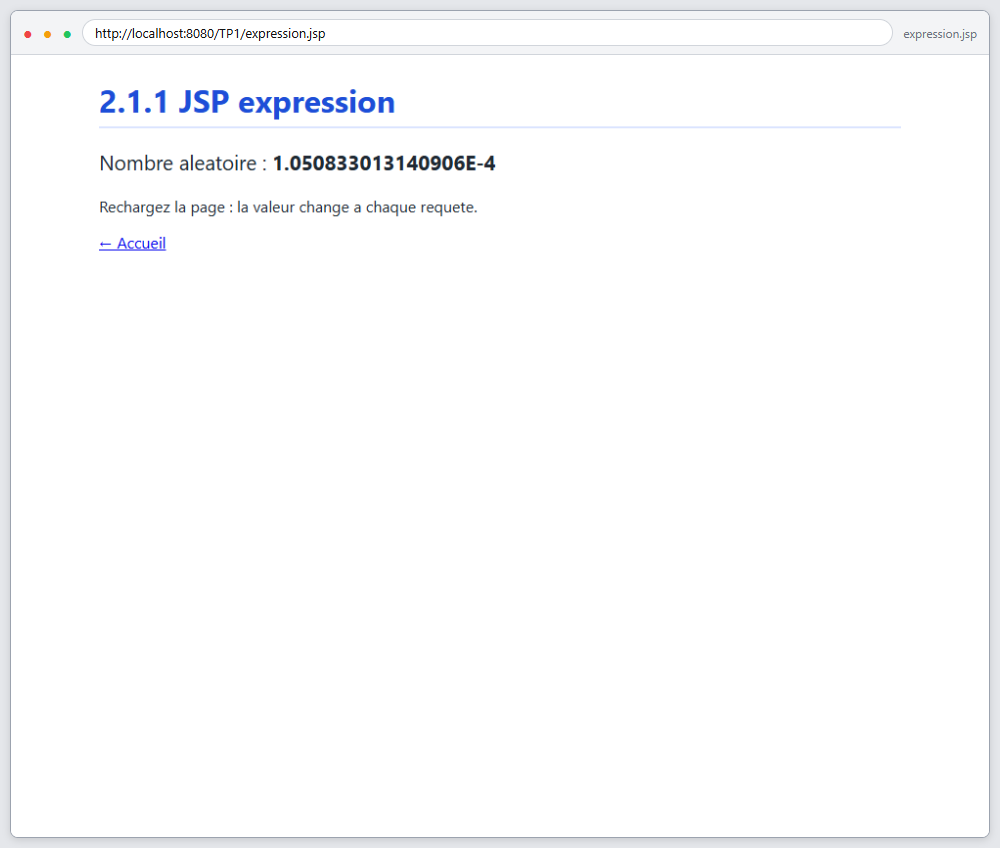
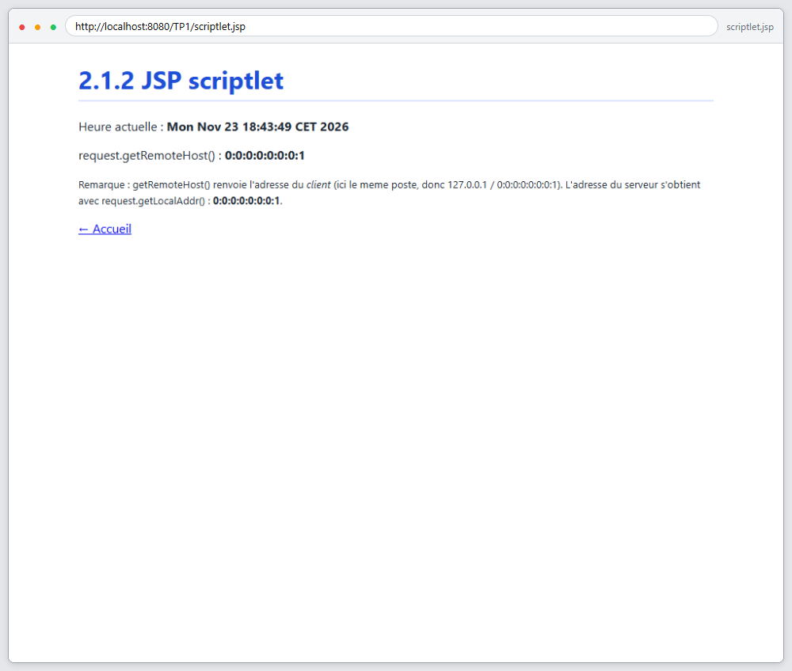
request.getRemoteHost(), mais cette méthode renvoie l'adresse du client. Ici client et serveur sont sur le même poste, d'où 0:0:0:0:0:0:0:1 (localhost en IPv6). L'adresse du serveur s'obtient avec request.getLocalAddr(), que j'ai affichée en plus.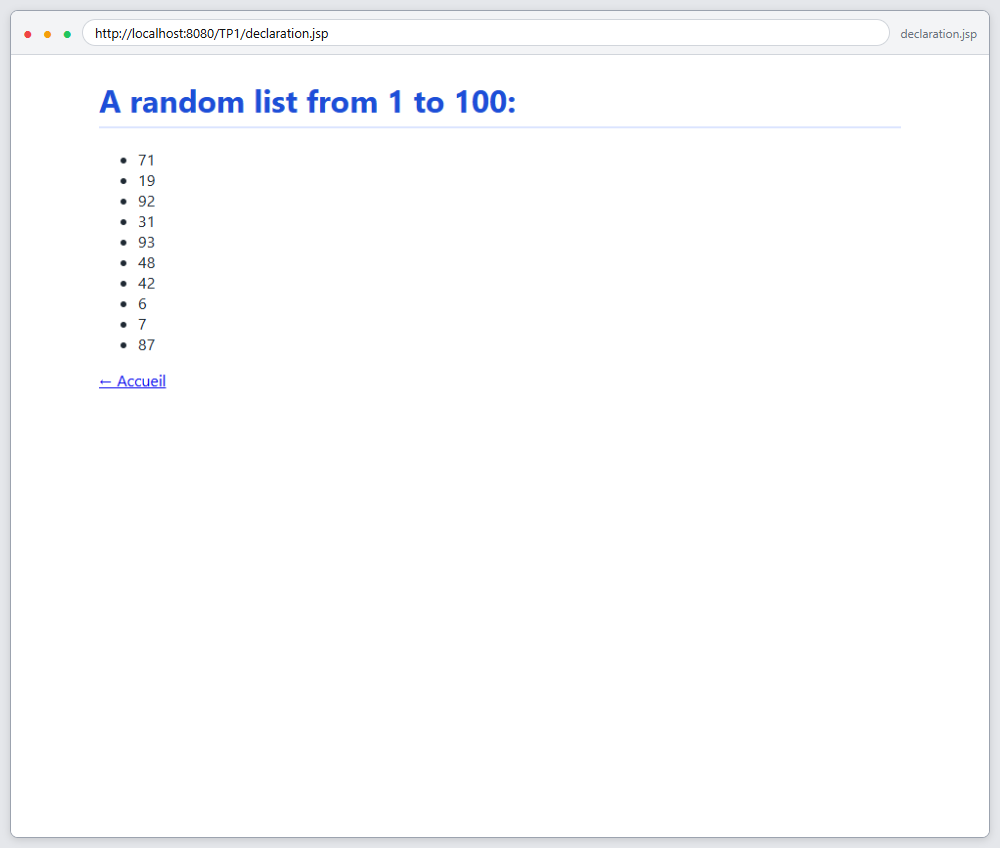
session). En testant ActiveSessionListener, j'ai remarqué que la simple visite d'une JSP augmentait le nombre de sessions actives. J'ai donc ajouté <%@ page session="false" %> aux JSP qui n'utilisent pas la session.Le bean isep.lab1.bean.Person respecte les conventions JavaBean : constructeur public sans argument, propriétés privées, getters/setters, Serializable. Comme les noms des propriétés sont identiques aux noms des champs du formulaire, bean.jsp peut tout remplir en une ligne :
<jsp:useBean id="person" class="isep.lab1.bean.Person" scope="request" /> <jsp:setProperty name="person" property="*" /> <!-- appelle setFirstName(), setLastName()... --> <jsp:getProperty name="person" property="firstName" />
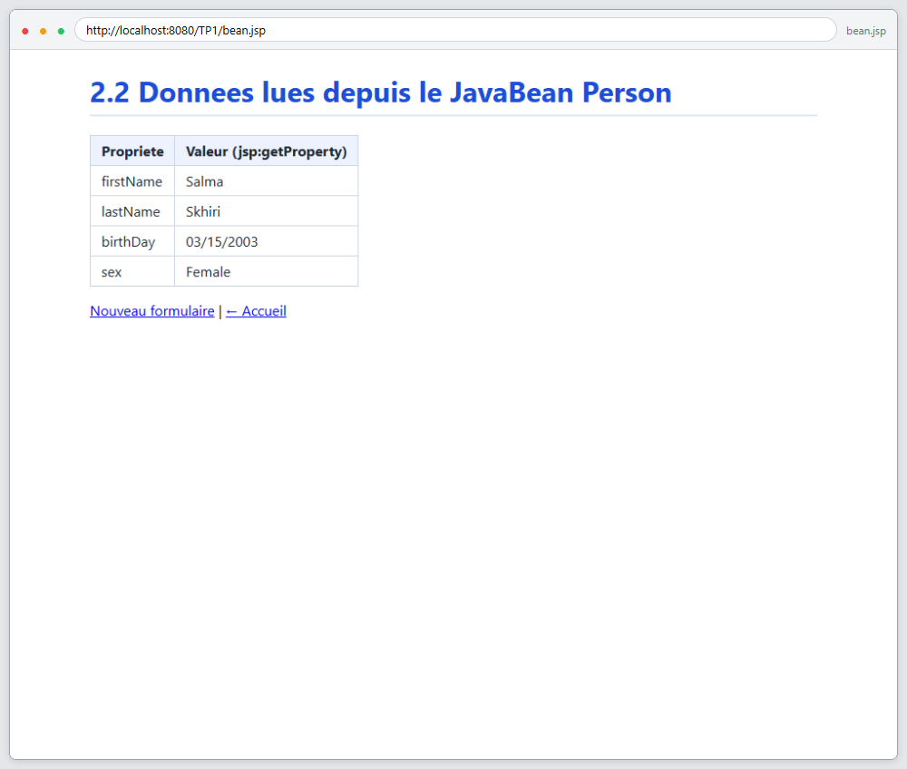
jsp:getProperty.lab.mvc.model.Person (avec en plus un constructeur à 4 paramètres).lab.mvc.controller.Controller (seulement doPost()). Il lit le formulaire, crée le bean, l'ajoute à la requête (request.setAttribute("person", person)), puis choisit la vue selon l'année de naissance (< 1990 → old.jsp, sinon young.jsp).index.html (formulaire), old.jsp et young.jsp.Dans les vues, j'utilise <jsp:useBean id="person" type="lab.mvc.model.Person" scope="request"/>. Avec type, la JSP ne crée pas d'objet : si l'attribut person est absent (par exemple si on ouvre old.jsp directement), on obtient une erreur au lieu d'un bean vide. Les vues n'utilisent que jsp:getProperty : elles affichent sans modifier le modèle.
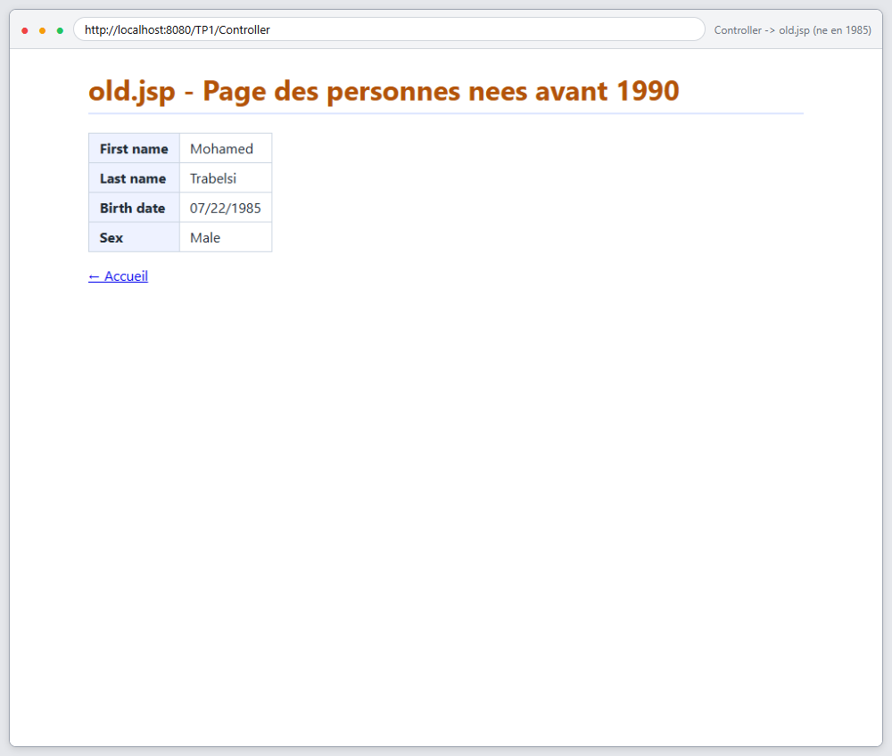
/Controller : le choix de la vue se fait côté serveur.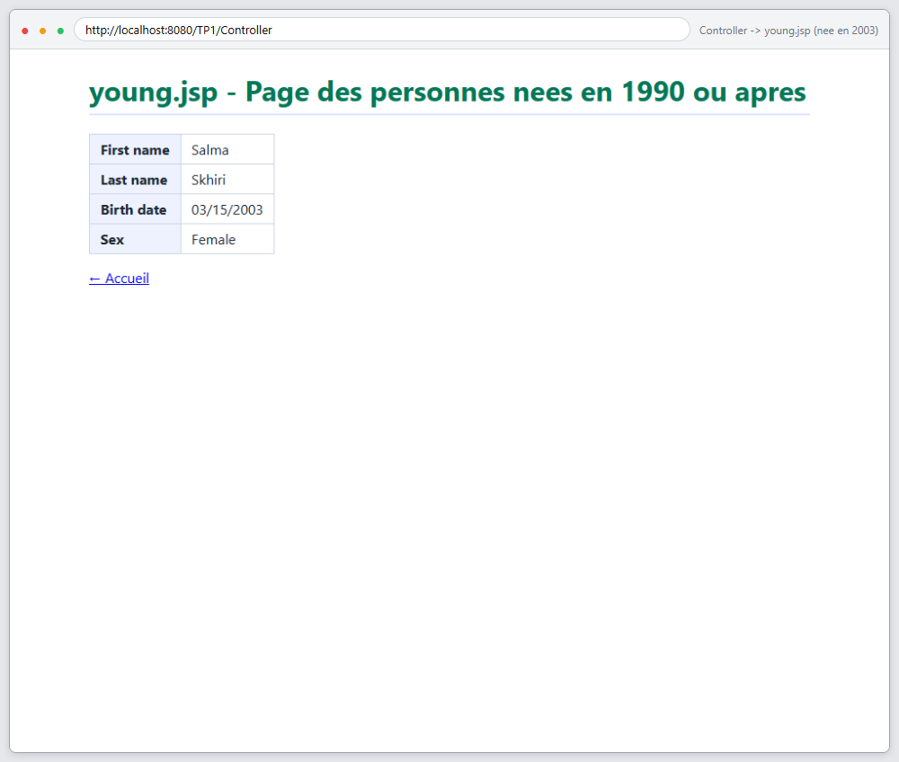
dispatcher.include(). Avec include, la JSP est insérée dans la réponse du contrôleur, qui garde la main et pourrait encore écrire après. Avec forward, la réponse est entièrement déléguée à la JSP (le tampon est vidé et le contrôleur ne doit plus rien écrire) ; c'est le choix habituel pour un contrôleur MVC. Dans les deux cas il n'y a qu'une seule requête HTTP (contrairement à sendRedirect), c'est pourquoi l'attribut de requête person est encore disponible dans la JSP.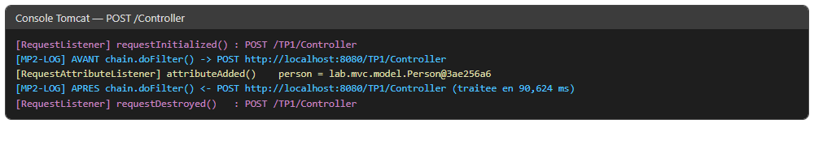
RequestAttributeListener voit l'ajout de l'attribut person. Les 90 ms correspondent à la première exécution : Jasper compile old.jsp en servlet.public void doFilter(ServletRequest request, ServletResponse response, FilterChain chain) ... {
System.out.println(prefix + " AVANT chain.doFilter() -> " + url);
long start = System.nanoTime();
chain.doFilter(request, response); // filtre suivant ou servlet
double ms = (System.nanoTime() - start) / 1_000_000.0;
System.out.println(prefix + " APRES chain.doFilter() <- " + url + " (traitee en " + ms + " ms)");
}
Le filtre a d'abord été configuré avec @WebFilter("/*") (étape 1), puis l'annotation a été mise en commentaire et le filtre déclaré dans web.xml avec un <init-param> logPrefix = [MP2-LOG], lu dans init() par filterConfig.getInitParameter("logPrefix") (étape 3). Le comportement est identique, seul le préfixe change. Il ne faut pas garder les deux : Tomcat enregistrerait alors deux filtres et chaque message apparaîtrait en double.
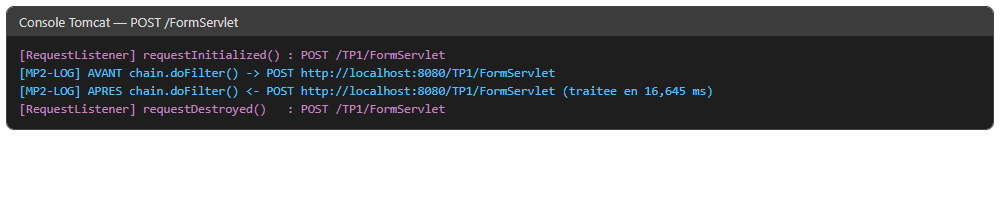
Que se passe-t-il avant et après la servlet ? Le code placé avant chain.doFilter() s'exécute avant la servlet (on peut lire, vérifier ou modifier la requête). L'appel à chain.doFilter() est bloquant : il exécute la servlet (ici doPost() de FormServlet) et ne revient qu'une fois la réponse produite. Le code après s'exécute donc quand la servlet a fini, avant que la réponse ne reparte vers le client. Le filtre « entoure » la servlet. init() est appelée une seule fois au déploiement (Figure 2) et destroy() une seule fois à l'arrêt (Figure 39).
LoginServlet crée/récupère la session et y stocke l'attribut user. SecurityFilter, mappé sur /ListItems, utilise request.getSession(false) : le paramètre false évite de créer une session vide pour un visiteur non connecté. S'il n'y a pas de session ou pas d'attribut user, le filtre fait response.sendRedirect(".../login.html") et ne fait pas appel à chain.doFilter().
| Situation testée | Résultat |
|---|---|
| Accès à ListItems sans être connecté | Redirection vers login.html (Figures 21-22) |
| Connexion puis accès à ListItems | Accès autorisé, liste affichée (Figures 23, 12, 24) |
Suppression de l'attribut user (session toujours là) | Accès refusé : la session existe mais n'a plus de user (Figure 36) |
session.invalidate() puis ListItems | Accès refusé, session=aucune (Figures 25-26) |
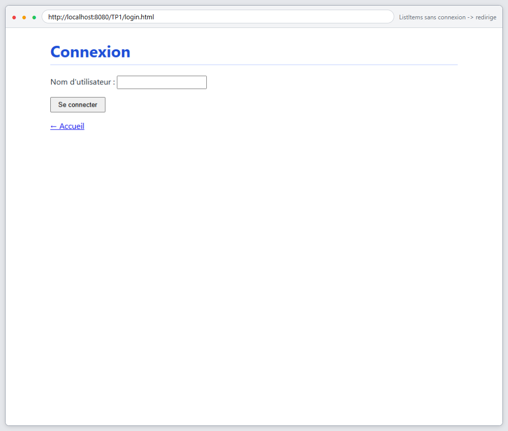
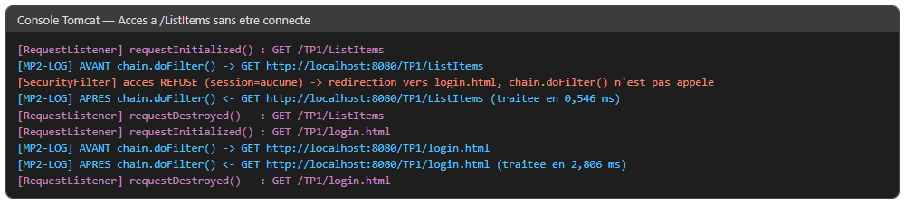
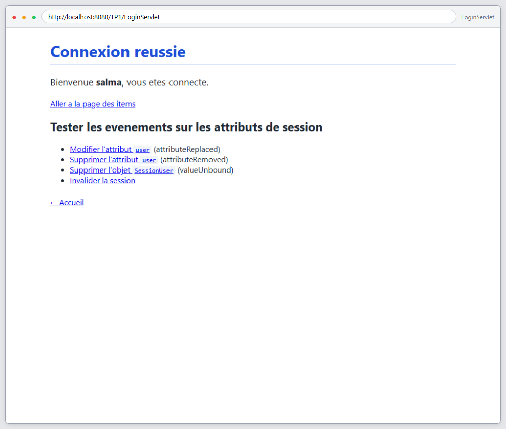
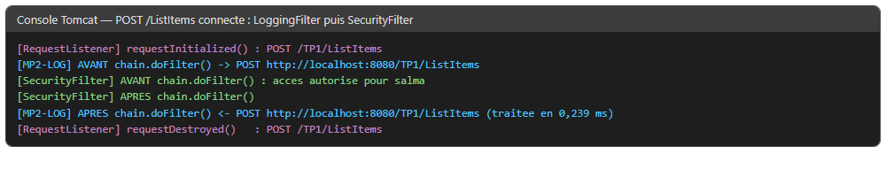
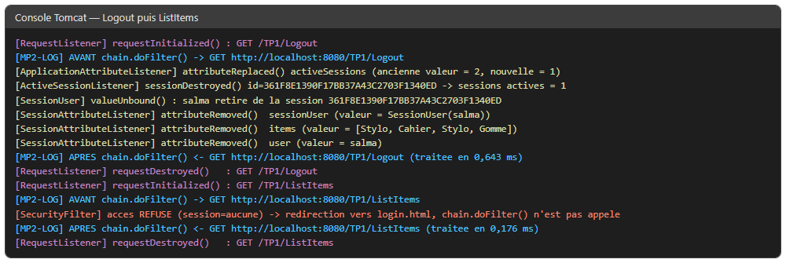
invalidate() détruit la session (tous ses attributs sont retirés) puis l'accès à ListItems est refusé.Que se passe-t-il quand chain.doFilter() n'est pas exécuté ? La chaîne s'arrête dans le filtre : ni les filtres suivants ni la servlet ne sont exécutés (aucune trace de ListItems dans la console). La réponse renvoyée au client est uniquement celle que le filtre a produite, ici une réponse 302 avec l'en-tête Location: /TP1/login.html. Si le filtre n'écrivait rien du tout, le client recevrait une page blanche avec le code 200. Les filtres précédents reprennent quand même la main : on voit la ligne « APRES » de LoggingFilter.
Ordre 1 : LoggingFilter puis SecurityFilter (mapping de LoggingFilter écrit en premier) – voir Figures 22 et 24.
Ordre 2 : mappings inversés. J'ai inversé les deux <filter-mapping> dans le web.xml déployé. Tomcat surveille ce fichier et a rechargé automatiquement le contexte :
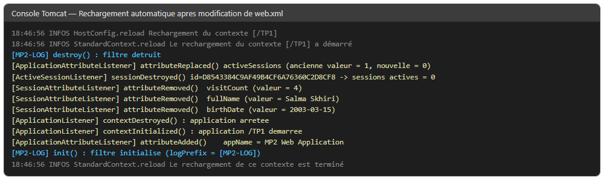
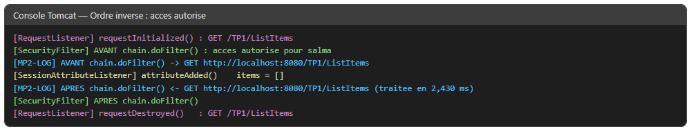
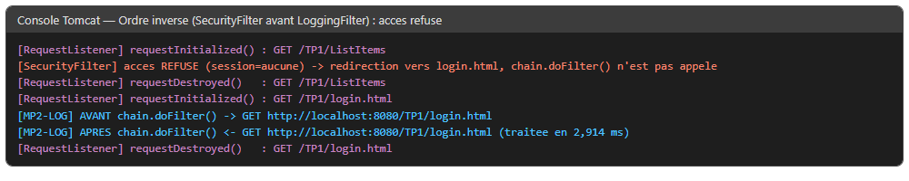
| Ordre Logging → Security | Ordre Security → Logging | |
|---|---|---|
| Autorisé | Log AVANT, Sec AVANT, servlet, Sec APRES, Log APRES | Sec AVANT, Log AVANT, servlet, Log APRES, Sec APRES |
| Refusé | Log AVANT, Sec REFUSE, Log APRES (la requête refusée est journalisée) | Sec REFUSE uniquement (la requête refusée n'est pas journalisée) |
Comment la FilterChain gère plusieurs filtres : pour chaque requête, Tomcat construit une FilterChain contenant les filtres dont le mapping correspond à l'URL, dans l'ordre d'apparition des <filter-mapping> dans web.xml, avec la servlet au bout. Chaque appel à chain.doFilter() passe à l'élément suivant ; quand il n'y a plus de filtre, c'est la servlet qui s'exécute. Les retours se font ensuite dans l'ordre inverse, comme des appels de méthodes imbriqués (une pile, ou des poupées russes). Conséquence pratique : l'ordre a un sens. Un filtre de journalisation ou de mesure du temps doit être placé en premier pour voir toutes les requêtes, y compris celles qui sont refusées. Pour les filtres déclarés avec @WebFilter, l'ordre n'est pas garanti par la spécification : c'est une bonne raison de passer par web.xml lorsque l'ordre compte.
Extra – temps d'exécution : mesuré avec System.nanoTime() (horloge monotone, adaptée aux durées, contrairement à currentTimeMillis()). Les requêtes simples prennent moins de 1 ms ; la première requête vers une JSP prend 70 à 90 ms car Jasper doit la traduire en Java puis la compiler.
contextInitialized() est appelée une fois au déploiement, avant l'initialisation des filtres et avant toute requête (Figure 2). Elle stocke l'attribut d'application appName = "MP2 Web Application", affiché ensuite par ShowSession (Figure 11). contextDestroyed() est appelée à l'arrêt ou au rechargement, après le destroy() des filtres (Figures 27 et 39). On observe aussi que la pose de appName déclenche immédiatement ApplicationAttributeListener.attributeAdded().
Le compteur est un AtomicInteger : Tomcat traite les requêtes sur plusieurs threads, deux sessions peuvent donc être créées en même temps et un int++ classique pourrait perdre une incrémentation. La valeur est recopiée dans l'attribut d'application activeSessions.
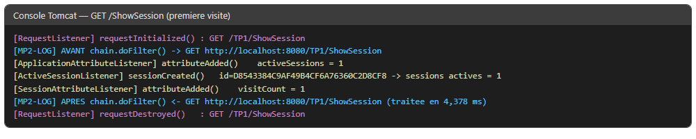
sessionCreated(), compteur à 1.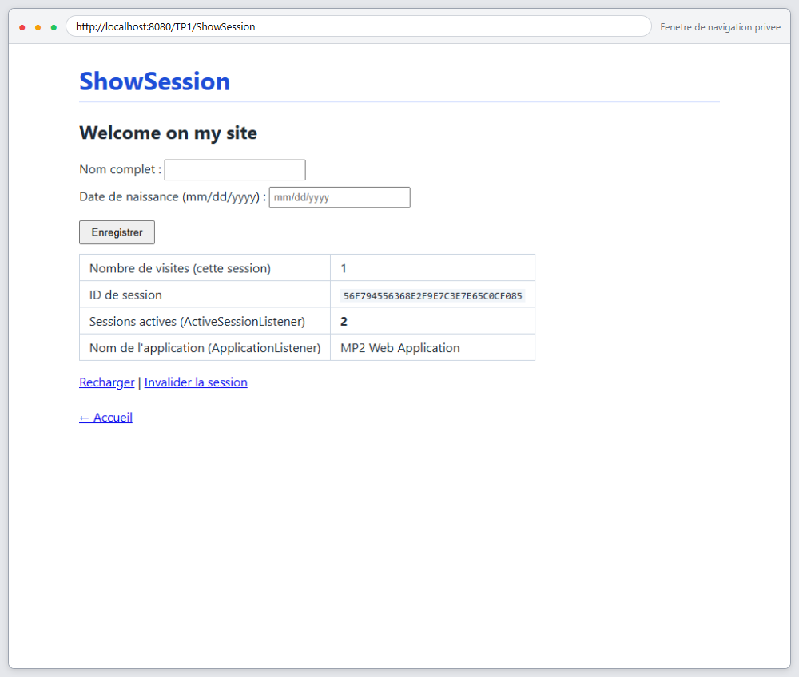
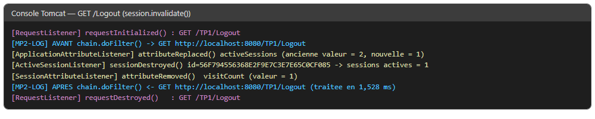
session.invalidate() dans la fenêtre privée : sessionDestroyed(), retour à 1.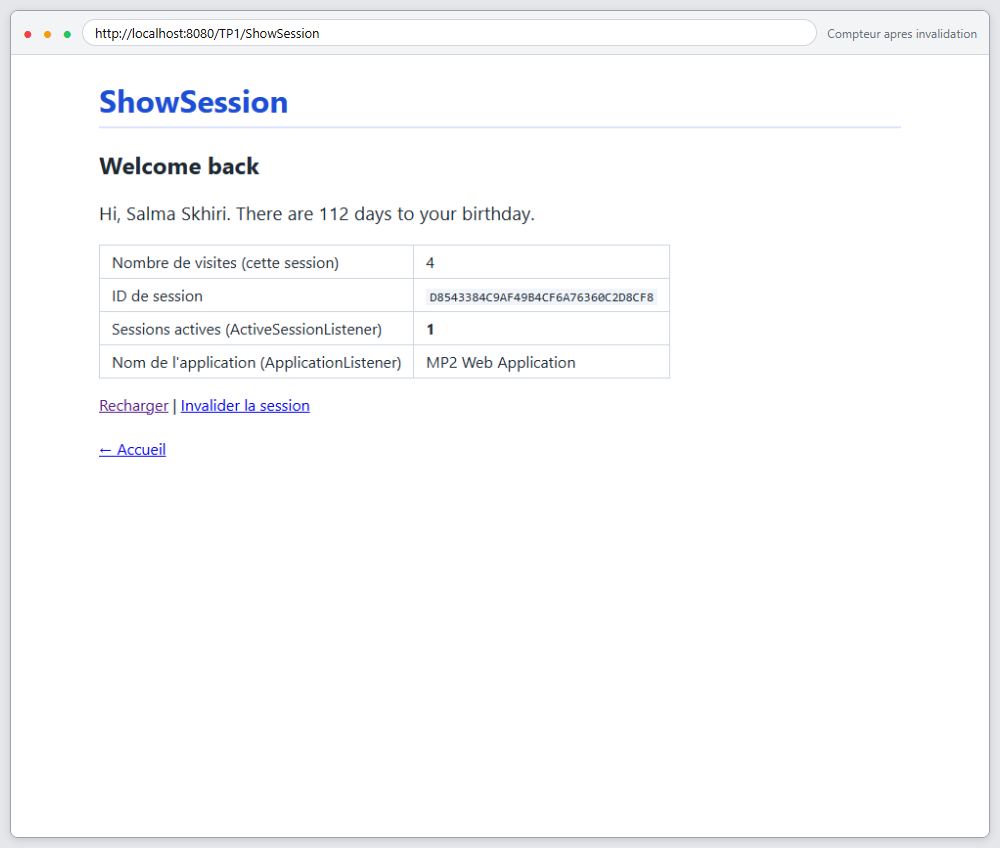
<session-timeout>). (2) Lors du rechargement du contexte et de l'arrêt de Tomcat, toutes les sessions sont détruites et le compteur revient à 0 (Figure 27). (3) Comme indiqué au 5.1, les JSP créaient des sessions « fantômes » jusqu'à l'ajout de session="false".Ce listener est déclaré dans web.xml avec <listener> (exercice 1.4.2.6) et ne porte pas d'annotation. Il fonctionne exactement comme les autres : ses messages apparaissent dans toutes les figures de console.
Comparaison avec LoggingFilter : sur toutes les traces, requestInitialized() apparaît avant le « AVANT » du filtre et requestDestroyed() après le « APRES » : le listener encadre toute la vie de la requête, y compris la traversée des filtres.
| Filtre | Listener de requête | |
|---|---|---|
| Rôle | Intercepter et agir sur la requête/réponse | Être notifié du début et de la fin d'une requête |
| Peut bloquer la requête ? | Oui (ne pas appeler chain.doFilter()) | Non, il observe seulement |
| Peut modifier la réponse ? | Oui (redirection, en-têtes, wrapper de réponse...) | Non |
| Ciblage | Par URL ou par servlet (url-pattern) | Toutes les requêtes de l'application |
| Ordre | Défini (ordre des mappings) | Pas de chaîne, simple notification |
| Exemples | Sécurité, journalisation, compression, encodage | Statistiques, nettoyage de ressources liées à une requête |
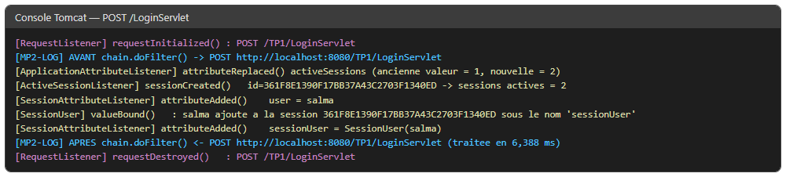
attributeAdded(user), valueBound() de SessionUser puis attributeAdded(sessionUser).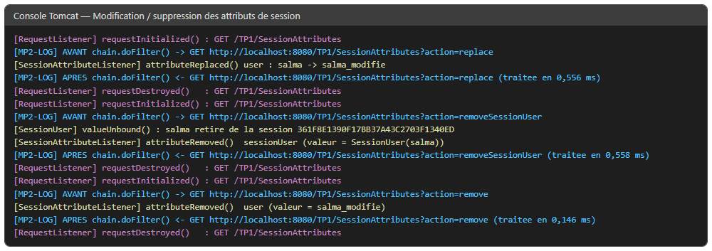
attributeReplaced : salma → salma_modifie) puis suppressions (valueUnbound, attributeRemoved).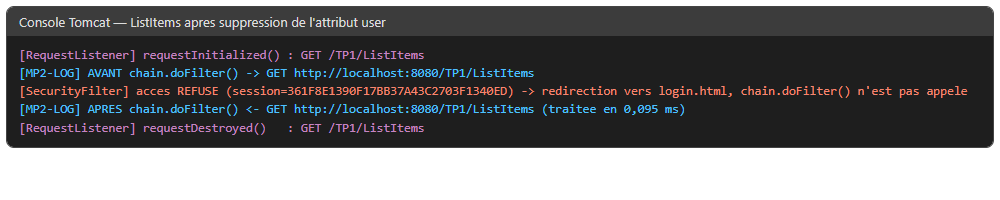
user supprimé, SecurityFilter refuse l'accès alors que la session existe toujours (son identifiant est affiché).Dans attributeReplaced(), event.getValue() renvoie l'ancienne valeur ; la nouvelle se lit dans la session. Un deuxième login avec un autre nom déclenche lui aussi attributeReplaced, puisque setAttribute sur une clé existante est un remplacement.
La servlet AttributeTest ajoute, remplace et supprime un attribut dans chaque portée :
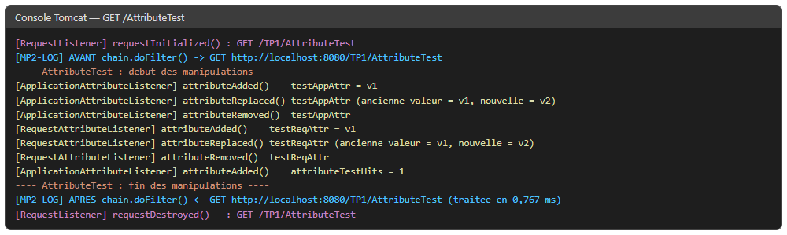
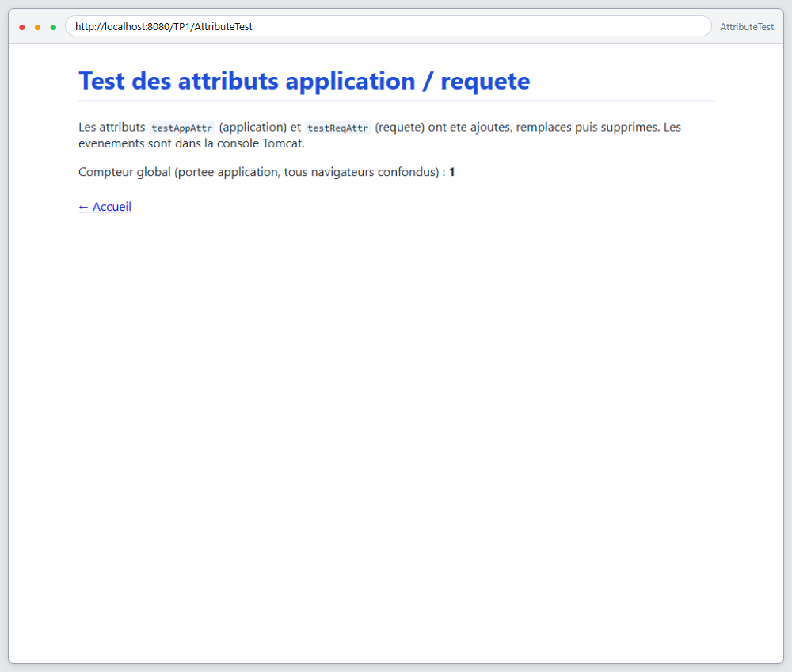
RequestAttributeListener affichait aussi des attributs que je n'avais pas créés (jakarta.servlet.include.*, org.apache.catalina.*...) : Tomcat les pose lui-même, par exemple pendant un include vers une JSP. Je les ai filtrés pour garder une console lisible.| Portée | Objet | Durée de vie | Visible par | Exemple du TP |
|---|---|---|---|---|
| Application | ServletContext | Du déploiement à l'arrêt de l'application | Tous les utilisateurs, toutes les servlets | appName, activeSessions |
| Session | HttpSession | Jusqu'à invalidate() ou au timeout | Un seul client (un navigateur, via JSESSIONID) | user, items, visitCount |
| Requête | ServletRequest | Le temps d'une seule requête (forward/include compris) | Les composants qui traitent cette requête | person (MVC) |
Les attributs d'application et de session peuvent être lus par plusieurs threads en même temps et demandent donc de la synchronisation ; les attributs de requête n'ont pas ce problème.
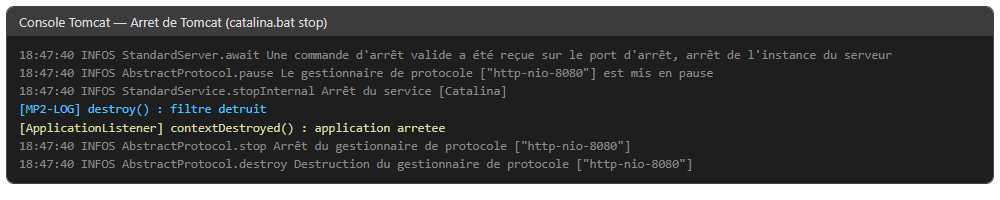
catalina.bat stop : destroy() du filtre puis contextDestroyed().SessionUser implémente HttpSessionBindingListener. LoginServlet en place une instance dans la session : valueBound() est appelée (Figure 34). Lors d'un removeAttribute("sessionUser") ou d'un invalidate(), c'est valueUnbound() qui est appelée (Figures 26 et 35). Cette classe n'a besoin ni de @WebListener ni de déclaration dans web.xml.
| HttpSessionBindingListener | HttpSessionAttributeListener | |
|---|---|---|
| Implémenté par | L'objet stocké lui-même | Une classe listener séparée |
| Enregistrement | Aucun : le conteneur détecte l'interface au moment du setAttribute | @WebListener ou <listener> |
| Événements reçus | Seulement ceux qui concernent cet objet | Tous les attributs de toutes les sessions |
| Usage typique | Un objet qui gère ses ressources (ex. libérer une connexion quand l'utilisateur se déconnecte) | Audit / journalisation globale |
Dans la console, pour un même setAttribute, valueBound() s'exécute avant attributeAdded(), et à la suppression valueUnbound() s'exécute avant attributeRemoved().
sessionWillPassivate() est appelée juste avant qu'une session soit sérialisée et sortie de la mémoire (écrite sur disque ou envoyée à un autre serveur) ; sessionDidActivate() est appelée juste après qu'elle a été désérialisée et remise en mémoire. Les attributs qui implémentent cette interface sont prévenus.
Cas d'usage : persistance des sessions au redémarrage (StandardManager peut écrire les sessions dans SESSIONS.ser), PersistentManager qui passe sur disque les sessions inactives pour libérer la mémoire, et clusters où une session est répliquée ou migrée vers un autre nœud (basculement, répartition de charge). Ils servent à fermer avant la passivation ce qui n'est pas sérialisable (connexion JDBC, socket, fichier ouvert, champ transient) et à le recréer après l'activation.
Ces événements sont difficiles à observer sur un seul serveur de développement, car la session reste en mémoire pendant toute sa vie : il n'y a ni passivation (pas assez de sessions pour remplir la mémoire, pas de PersistentManager configuré) ni migration (un seul nœud). Il faudrait configurer un PersistentManager dans context.xml, ou un cluster de plusieurs Tomcat, ou redémarrer le serveur avec la persistance des sessions activée et des attributs sérialisables. Dans mes tests, le rechargement du contexte a détruit les sessions (Figure 27) au lieu de les passiver.
jakarta.servlet. Beaucoup d'exemples en ligne utilisent encore javax.JAVA_HOME doit être défini, sinon catalina.bat refuse de démarrer. Avec catalina.bat run, les messages de mes filtres et listeners s'affichent directement dans la console.<filter-mapping> change le résultat. Une double déclaration (annotation et web.xml) crée deux instances du filtre.sendRedirect produit une deuxième requête HTTP, visible dans la console et dans la barre d'adresse ; forward/include restent dans la même requête et conservent les attributs.Ce TP m'a permis de suivre concrètement le cycle de vie d'une requête dans Tomcat : RequestListener → filtres (dans l'ordre de web.xml) → servlet ou JSP → filtres (dans l'ordre inverse) → RequestListener, ainsi que le cycle de vie de l'application et des sessions.
Code source complet : dépôt GitHub (lien en page de garde). Les captures de console sont des extraits du fichier de sortie de catalina.bat run, mis en forme et colorés par composant.